マルス券について
1.はじめに
皆様は、「マルス券」というものをご存知だろうか。例えば、こんな切符だ。
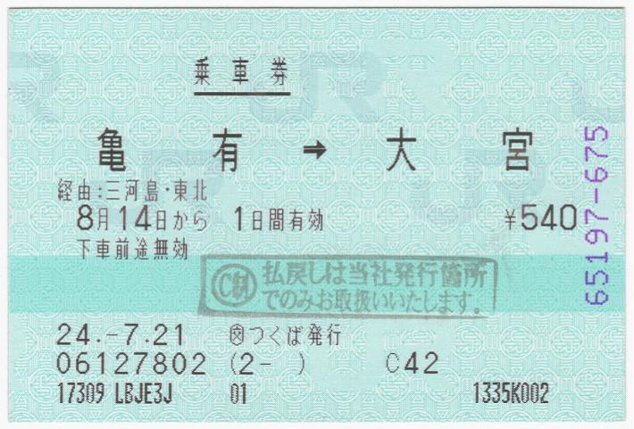
もう一つ。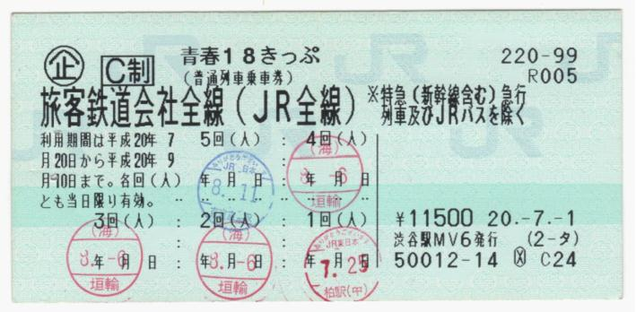
鉄道で旅行などに行った方は分かるかと思うが、マルス券とは、みどりの窓口や、指定席券売機、そして旅行会社などで「マルス端末」により発券される、緑色の切符のことである。このレポートでは、そのマルス券について研究していこうと思う。
2.「マルス端末」とは
そのマルス券の発券に使われる端末、その全てが「マルス端末」である。国分寺にある中央装置と通信し、列車の指定席の予約や、各種料金券の発券や、乗車券の発券、果ては一部の高速バスの予約や一部のホテルの予約などもできる優れ物である。
(まあ、高速バスやホテルの発券方法を知らない駅員が殆どだが)
マルス端末は、駅のみどりの窓口や、旅行会社などに置かれている。乗り入れや経営分離の影響で東京メトロ綾瀬駅や土佐くろしお鉄道中村駅、宿毛駅、安芸駅などにも置かれている。そのマルス端末にも、いろいろと種類がある。まずは、「印字方法」で仲間分けしてみようと思う。
3.印字方法
マルス券には、2つの印字方法がある。一つは感熱方式、もう一つは熱転写方式だ。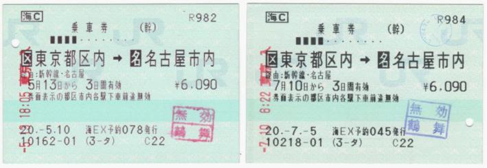
右が熱転写方式による印字、左が感熱方式による印字だ。
これらの2つの切符、日付や発行場所や券番以外は印字に違いは無い。だが、少し文字の色が違うのがわかると思う。「[名]名古屋市内」の印字を拡大してみる。
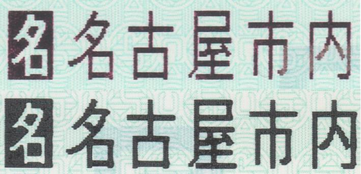
上が感熱方式で、下が熱転写方式である。上の感熱方式が少し赤みを帯びていて、下の熱転写方式がほぼ真っ黒である。
では、なぜこのような違いが出てきたのだろうか？それは、印字方法の違いにある。
3.1.熱転写方式
熱転写方式とは、発券プリンタにセットしておいた黒色インクリボンから、券紙に文字を転写する、という方法である。(インクリボン＝インクを染み込ませておいた織布。これに圧力をかけることで文字を印字する)原理的には、FAXと同じだ。
そのため、券紙の感熱加工などは全く必要ない。かつ、真っ黒の文字となる。
利点としては、
- 印字が薄れることがほぼ無い
- 券紙自体はただの紙同然なので、ハンコなどのノリがいい
- 一々リボンを取り替えないといけないので、コストがかかる
- リボンが絡まったりすると大変
ちなみに、赤色インクリボンもセットされており、主に買い間違いの切符への無効処理をする時などに使う。つまり、二色のインクリボンを常にセットしないとならないということである。
この印刷方式は、マルスの誕生時からずっと用いられてきた歴史の長い印字方式だが、後述する感熱方式の発展により最近は衰退しました
3.2.感熱方式
感熱方式とは、熱に反応して黒色、赤色に変色する券紙に、高温に熱した「サーマルヘッド」と呼ばれるものを接触させて、文字を印字する、という方法である。身近なものだと、レシートと同類だ。
赤色にも変化するために、このような赤みがかかるのである。

だが、変色反応はだんだん落ちていく。つまり、だんだん印字が薄くなっていく、ということだ。
実際、印字がここまで薄まっている短距離券売機の切符もあるので、感熱紙の印字保持性は良くないと思う。
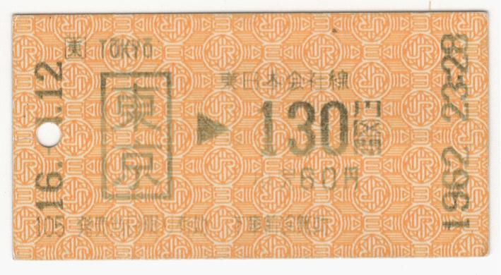
また、はんこもここまで滲むこともある。
“当社オリジナルの高保存顕色剤とマイクロボールを組み合わせることにより、感熱紙では最高レベルの保存性を実現しています。”と書かれている。だが、まだ10年も経っていないので、印字保持性が良いのかはまだ判断できないと思う。
（【外部リンク】王子ホールディングス公式サイト「新技術情報 -TECH NEWS- Vol.07」より）
はんこに関しては、券紙の問題なので、これ以上改善することは難しい。
以上の理由で、利点としては、
- 熱転写と違ってインクリボンが必要ないので、コストが少ない
- 上記の理由により、保守が楽。
- 券紙自体に加工が施してあるので、ハンコなどのノリが悪い
- 変色反応が薄れていくので、そのうち印字が薄まる。(印字保持性が良くない)
4.地紋
マルス券には、元から印刷されてある地紋がある。
例えば、JR東海中央西線鶴舞駅発行のマルス券の地紋。
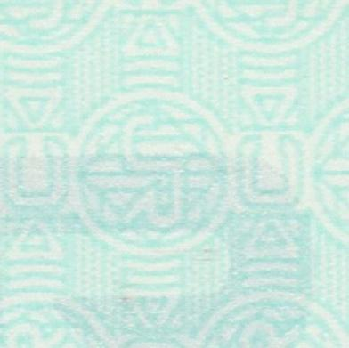
JR西日本北陸本線呉羽駅発行のマルス券の地紋。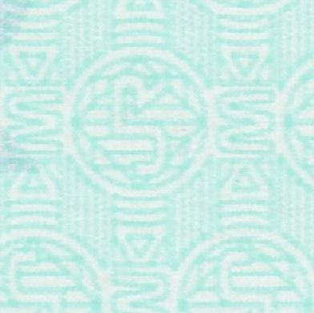
JR北海道新千歳空港駅発行のマルス券の地紋。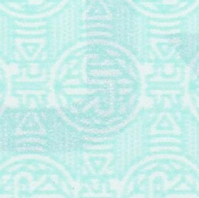
JR東日本柏駅発行のマルス券の地紋。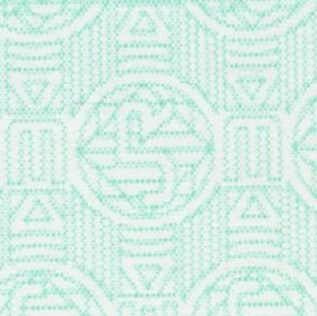
JRの周りの文字が違うのだ。JR東日本はE,JR東海はC,西日本はW,JR北海道は北,JR四国はS,JR九州はK,となっている。
旅行会社は、その店舗の地域によって地紋が違う。例えば、茨城県つくば市にあるJTB発行のマルス券の地紋は、
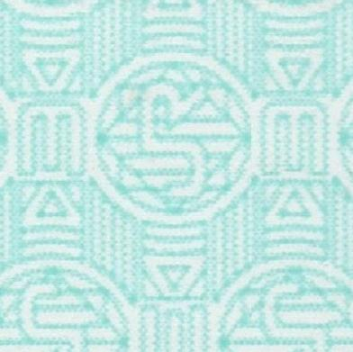
と、JR東日本と同一のEとなっている。この地紋の違いは、オレンジ色の切符や補充券、常備券でも同様である。
5.85mm券と120mm券
マルスで発行される切符にも、サイズの違いがある。サイズの種類は、2つある。
- 85mm券
- 120mm券
120mm券になるものを挙げてみる。
- 個室寝台券
- 運賃登録のない私鉄への連絡券
- 経路数が11経路以上16経路以下の乗車券
- 私鉄との共同使用駅発行の私鉄区間のみの切符
- 一部の企画乗車券・イベント券
(*マルスシステムへの運賃登録がない私鉄への連絡券は、直接金額を打ち込んでhax発券する、という「金額入力」の動作が必要となる。
また、企画乗車券とは、JR側が特別な条件を設けて発売する切符のことである。
イベント券とは、例えば食堂車の予約チケット、某劇団の予約券、鉄道博物館の入場券である。)
この120mm券、自動改札機が認識できない。入れると吐き出してしまう。
そのため、120mm券で改札を通る時には、改札窓口を通って、チケッターにより入鋏しなければならない。
(*入鋏:切符に、使用開始を証明するもの(穴やチケッターやハサミ)を入れること)
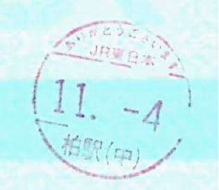
↑チケッターの一例6.旅行会社とJRの違い
また、旅行会社発行のマルス券とJR発行のマルス券だと、大きな差がある。JTB発行の乗車券と、JR発行の乗車券を比較してみる。

左がJR発行の乗車券、右が旅行会社発行の乗車券だ。
印字の違いは仕方がないので無視するとして、右端を見て貰いたい。
旅行会社発行の方は、紫色の数字が書いてあるのがわかると思う。
この紫色の印字、券紙を印刷する時から印字されているのだ。
そもそも、旅行会社のマルス端末は、JRのマルス端末とは大きな差がある。
それは、券紙給紙方式だ。
6.1.旅行会社のマルス端末の券紙給紙方式
旅行会社のマルス端末では、工場で最初から85mm,120mmに切断して、紫色の数字を印字した「プリカット紙」を使っている。そして、その紙をJRから購入して、発券プリンタにセットして使うのだ。但し、びゅうプラザのみ、JRと同じ方式だ。
6.2.JRのマルス端末の券紙給紙方式
JRのマルス端末では、トイレットペーパーのようにくるくる丸められた「ロール紙」をセットし、発券プリンタが一々カットして発券するという方式を用いている。そのため、プリカット紙にはない独特のうねりがある。また、発券プリンタもプリカット紙用より複雑なものとなる。
7.指定席券売機
長らく係員が触って発券するものだったマルス端末にも、顧客が操作して発券する出てきた。それが、「指定席券売機」だ。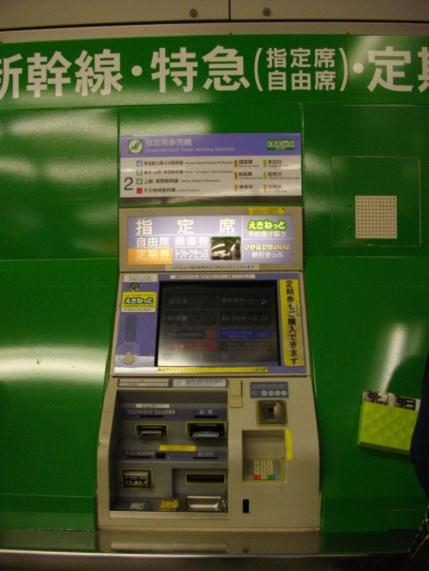
この券売機、かなり高性能で、全国の指定席連結列車の指定席が全て購入できる。(寝台券を除く)また、シートマップからのピンポイントの座席指定もできる。(東海道新幹線を除く)しかも、今でも熱転写方式が多い。また、裏メニューから各種割引乗車券(株主優待を除く)も発券できる、という超高性能券売機だ。昔は窓口の補助という形だったが、今では特にJR東日本が、窓口を閉鎖して発券業務全てを指定席券売機にやらせる、という駅が増えている。
だが、この指定席券売機、かなりの問題を抱えている。
例えば、
- 寝台券が発券できない
- 東海道新幹線のピンポイント座席指定ができない
- 動作が重い
- イベント券が発券できない
- 周遊きっぷが発券できない
- 操作が難解
- 乗車変更ができない
8.おわりに
最終章に大きな問題提起をしてしまったが、皆様、このレポートを見て知識がついただろうか。マルス券には、券面にもいろいろなバリエーションがある。また、何故かマルス端末では発券できない切符とかもある。そのような点は、突き詰めていくと面白い。また、そのような情報をまとめたブログも沢山ある。
皆様も興味を持ってくださったのなら、調べてみることをお勧めする。
最後に、このレポートを見てくれて、ありがとうございました！
―おわりー